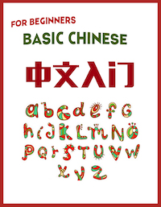

Mandarin Chinese for Beginners

Learning Objectives
After completing this module, students should be able to:
Understanding varieties of Chinese language.
Introducing oneself appropriately.
Communicating about preferences, likes and dislikes.